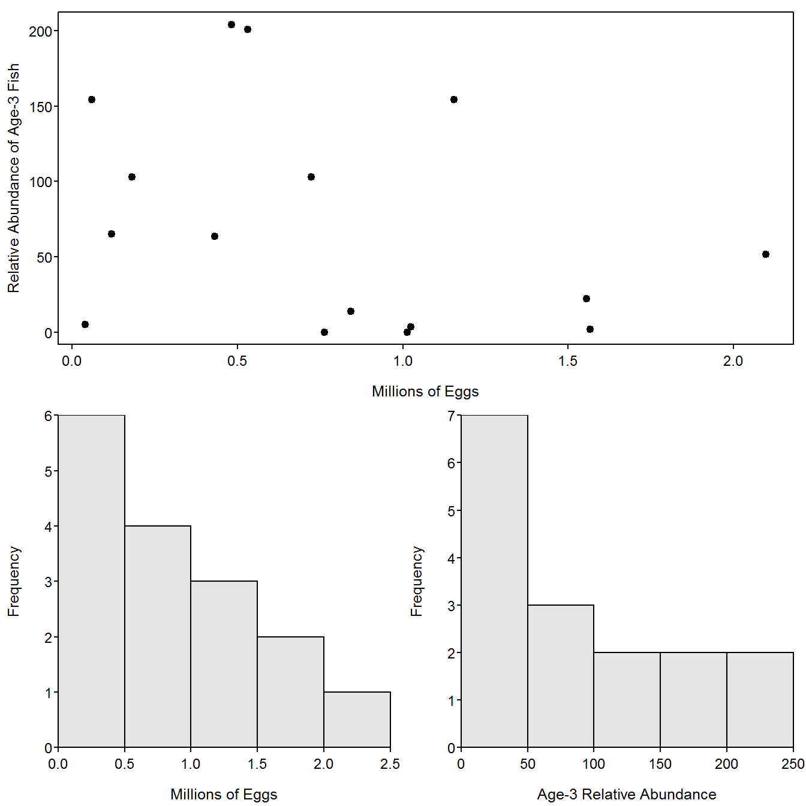

Complex Grid Layouts with layout()
The layout() function allows for more complicated organizations of graphics. The only required argument to layout() is a matrix that specifies the positions, as a grid, for a series of plots. The numbers in the matrix describe which graphic will appear in that position. For example, the following code constructs a 2x2 grid for four plots where the first plot will appear in the lower-right corner and the last plot will appear in the upper-left corner.
> ( m <- matrix(4:1,nrow=2,byrow=TRUE) ) [,1] [,2]
[1,] 4 3
[2,] 2 1> layout(m)The layout.show() function is used to show the layout grid. Its only argument is the number of positions to show.
> layout.show(4)Figure 1: Illustration of 2x2 layout grid for graphics.
The 2x2 grid in Figure 1 is not that interesting because that layout is just as easily constructed with mfrow= in par() (as shown in the book). Layouts, however, can also be constructed that are not “grids.” For example, the entire first row may be one graphic with a second row of two graphics. This layout grid is constructed by including a “1” in the first two positions of the layout matrix Figure 2.
> ( m <- matrix(c(1,1,2,3),nrow=2,byrow=TRUE) ) [,1] [,2]
[1,] 1 1
[2,] 2 3> layout(m)
> layout.show(3)Figure 2: Illustration of layout grid for graphics with one graph in first row and two in the second row.
The following code fills this layout grid to produce Figure 3.
> plot(age3~eggs,data=BLH,pch=19,xlab="Millions of Eggs",
ylab="Relative Abundance of Age-3 Fish")
> hist(~eggs,data=BLH,xlab="Millions of Eggs")
> hist(~age3,data=BLH,xlab="Age-3 Relative Abundance")
Figure 3: Illustration of layout grid for graphics with one graph in first row and two in the second row.
The size of the grids in the layout may be controlled with height= and width=. These arguments accept vectors that represent the relative heights and widths of the rows and columns in the layout grid, respectively. For example, height=c(3,1) sets the height of the first row to be three times larger than the height of the second row. Including the respect=TRUE argument will assure that “unit distances” in the horizontal and vertical directions are treated the same. An example layout with different cell sizes is constructed below and shown in Figure 4. Also note in this example, that a zero in a cell means that that cell will not receive a plot.
> ( m <- matrix(c(2,0,1,3),nrow=2,byrow=TRUE) ) [,1] [,2]
[1,] 2 0
[2,] 1 3> layout(m,height=c(1,4),width=c(4,1),respect=TRUE)
> layout.show(3)Figure 4: Illustration of layout grid for graphics with differing row heights and column widths.
Figure 5 is an example that fills the layout shown in Figure 4.
> par(mar=c(4,4,0,0))
> plot(age3~eggs,data=BLH,xlim=c(0,2.4),ylim=c(0,240),pch=19,
ylab="Relative Abundance of Age-3 Fish",
xlab="Millions of Eggs")
> par(mar=c(0,4,0,0))
> boxplot(BLH$eggs,axes=FALSE,ylim=c(0,2.4),horizontal=TRUE)
> par(mar=c(4,0,0,0))
> boxplot(BLH$age3,axes=FALSE,ylim=c(0,240))Figure 5: Illustration of layout grid with differing heights and widths such that a scatterplot appears in the ‘middle’ with corresponding boxplots on the ‘sides.’
Finally, layout() can be used to make quite complex grids, as illustrated with the code below that produced Figure 6. Note that plot.new() creates a new blank plot in which the subsequent text() commands will place text (in this case marginal labels).
> BTH1 <- BT %>% filterD(lake=="Harrison",era=="1977-80")
> BTO1 <- BT %>% filterD(lake=="Osprey",era=="1977-80")
> BTH2 <- BT %>% filterD(lake=="Harrison",era=="1997-01")
> BTO2 <- BT %>% filterD(lake=="Osprey",era=="1997-01")
>
> ( m <- matrix(c(0,1,2,3,5,6,4,7,8),nrow=3,byrow=TRUE) ) [,1] [,2] [,3]
[1,] 0 1 2
[2,] 3 5 6
[3,] 4 7 8> layout(m,height=c(1,8,8),width=c(1,8,8),respect=TRUE)
>
> par(mar=c(0,0,0,0))
> plot.new(); text(0.5,0.5,"Harrison",cex=1.5)
> plot.new(); text(0.5,0.5,"Osprey",cex=1.5)
> plot.new(); text(0.5,0.5,"Era = 1977-1980",cex=1.5,srt=90)
> plot.new(); text(0.5,0.5,"Era = 1997-2001",cex=1.5,srt=90)
>
> par(mar=c(3.05,3.05,0.65,0.65),mgp=c(1.7,0.5,0))
> xlmt <- c(-0.5,14.5)
> ylmt <- c(0,700)
> plot(fl~age,data=BTH1,xlab="",ylab="Fork Length",
pch=19,xlim=xlmt,ylim=ylmt)
> plot(fl~age,data=BTO1,xlab="",ylab="",
pch=19,xlim=xlmt,ylim=ylmt)
> plot(fl~age,data=BTH2,xlab="Age",ylab="Fork Length",
pch=19,xlim=xlmt,ylim=ylmt)
> plot(fl~age,data=BTO2,xlab="Age",ylab="",
pch=19,xlim=xlmt,ylim=ylmt)
Figure 6: Illustration of layout grid with differing heights and widths such that labels can be placed on the sides.